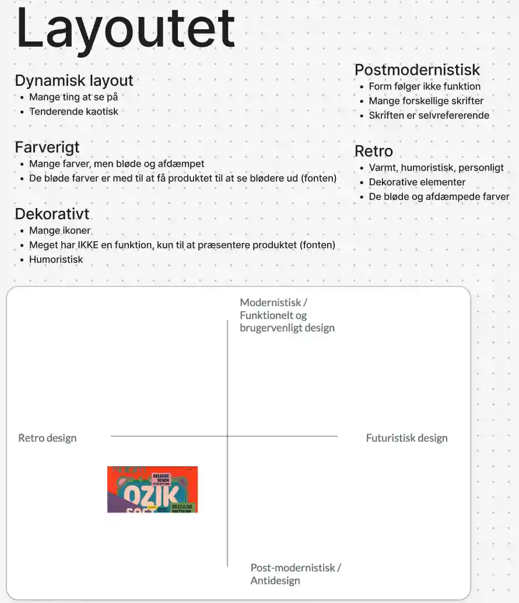

Tema 2 - Web
I dette tema kom vi for alvor i gang med kodning. Vi downloadede programmer som VS Code og FileZilla og lærte vigtigheden af en god mappestruktur for at holde styr på projekter og filer.
Her ses en god mappestruktur, som er delt op efter tema
Vi blev introduceret til HTML-elementer, attributter og menuer samt centrale CSS-koncepter som margin, padding, fonte, grid og flex. Vi lærte også at validere vores kode for at undgå fejl og blev introduceret til “Mobile-first” -princippet og media queries. Selvom det i starten var uoverskueligt, er det nu blevet en naturlig del af kodningen.

Derudover arbejdede vi med designprincipper, lavede
vores første wireframes og udførte stilanalyser.
Vi lærte om filformater og brugte værktøjet
Squoosh til komprimering, hvilket gør siderne
hurtigere og mere bæredygtige ved at reducere filstørrelsen uden at gå
på kompromis med kvaliteten.
I dette tema lavede vi også mobilsiden og studiestartsprøven, hvor vi demonstrerede vores nye færdigheder. Klik på billederne for at besøge sitet.